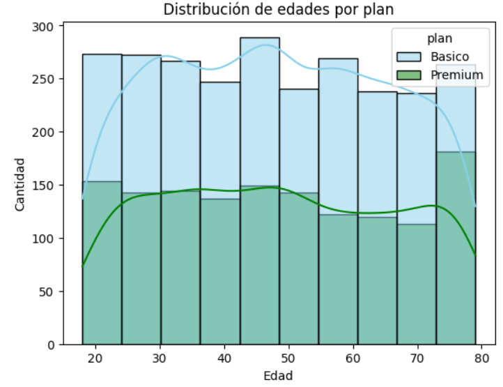
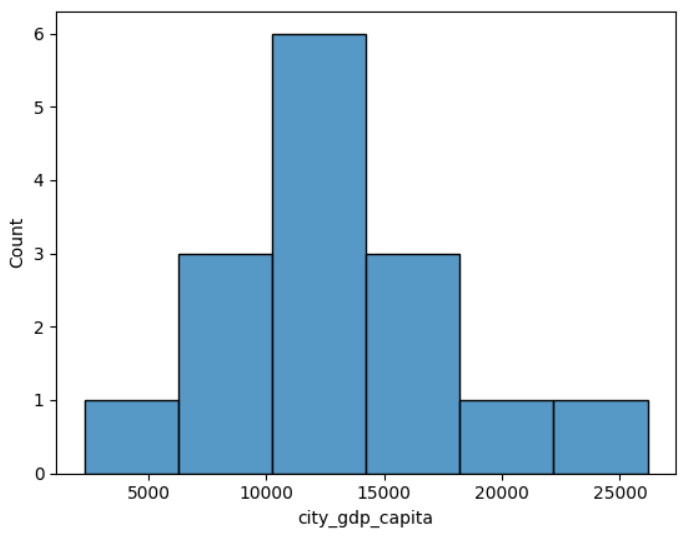

Analista de Datos | Administrador de Bases de Datos
Soy un apasionado Analista de Datos enfocado en resolver problemas de negocios reales a través de los datos. Con un gran conocimiento en Python, SQL y Power BI, disfruto de transformar datasets complejos en información útil y soluciones estratégicas. Siepre dispuesto a aprender nuevas tecnologías y colaborar en proyectos desafiantes.

Desafío: Evaluar el comportamiento de los clientes de una empresa de telecomunicaciones en Latinoamérica.
Solución: Identificar patrones de consumo, diseñar estrategias de retención y sugerir mejoras en los planes ofrecidos por la empresa
Ver código
Desafío: Evaluar cómo la movilidad urbana se relaciona con la productividad económica en las principales ciudades latinoamericanas.
Solución: Entender cómo la congestión vehicular, el tiempo de traslado y los retrasos impactan indicadores económicos como el PIB per cápita y la tasa de desempleo.
Ver código